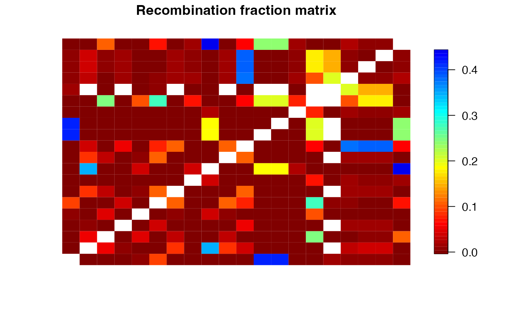
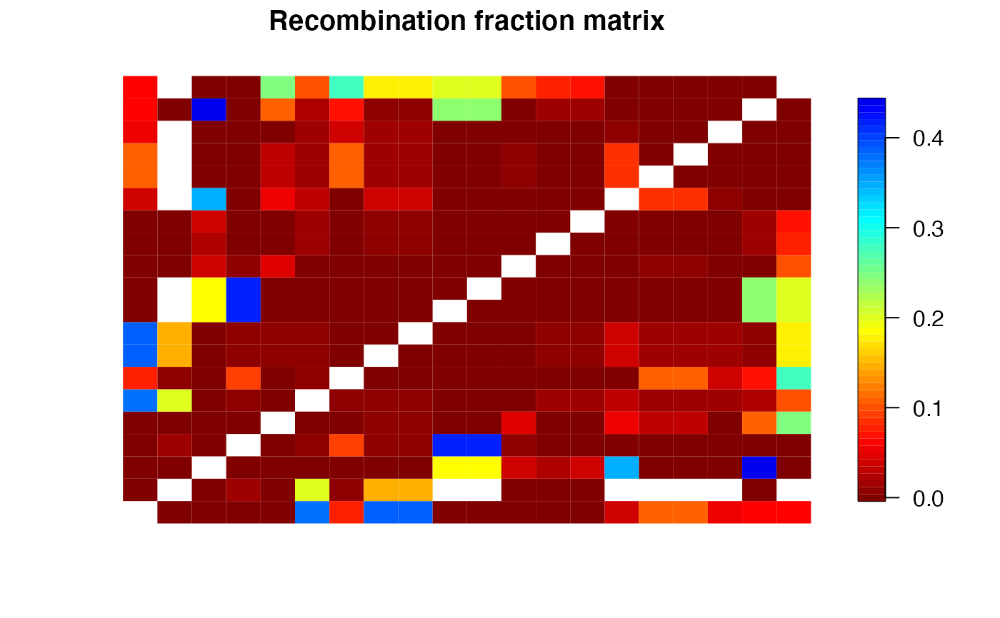

Estimates loci position using Multidimensional Scaling proposed by
Preedy and Hackett (2016). The code is an adaptation from
the package MDSmap, available under GNU GENERAL PUBLIC LICENSE,
Version 3, at https://CRAN.R-project.org/package=MDSMap
an object of class mappoly.input.matrix
integer. The smoothing parameter for the principal curve.
If NULL (default) this will be done using the leave-one-out cross validation
vector of integers or strings containing loci to be omitted from the analysis
number of dimensions to be considered in the multidimensional scaling procedure (default = 2)
the exponent that should be used in the LOD score values to weight the MDS procedure (default = 2)
if TRUE (default), display information about the analysis
an object of class mappoly.mds
currently ignored
A list containing:
the input distance map
the unconstrained MDS results
the principal curve results
a matrix of pairwise distances between loci where the columns are in the estimated order
a data frame of the loci containing the name and position of each locus in order of increasing distance
integer giving the total length of the segment
a vector of the names of loci removed from the analysis
the scaling factor from the MDS
a data frame showing the number associated with each locus name for interpreting the MDS configuration plot
a data frame showing locus name associated with each number on the MDS configuration plots
Preedy, K. F., & Hackett, C. A. (2016). A rapid marker ordering approach for high-density genetic linkage maps in experimental autotetraploid populations using multidimensional scaling. _Theoretical and Applied Genetics_, 129(11), 2117-2132. doi:10.1007/s00122-016-2761-8
s1 <- make_seq_mappoly(hexafake, 1:20)
t1 <- est_pairwise_rf(s1, ncpus = 1)
#> INFO: Going singlemode. Using one CPU for calculation.
m1 <- rf_list_to_matrix(t1)
#> INFO: Going singlemode. Using one CPU.
o1 <- get_genomic_order(s1)
s.go <- make_seq_mappoly(o1)
plot(m1, ord = s.go$seq.mrk.names)

mds.ord <- mds_mappoly(m1)
#> Stress: 0.56364
#> Mean Nearest Neighbour Fit: 0.48961
plot(mds.ord)
so <- make_seq_mappoly(mds.ord)
plot(m1, ord = so$seq.mrk.names)

plot(so$seq.num ~ I(so$genome.pos/1e6),
xlab = "Genome Position",
ylab = "MDS position")